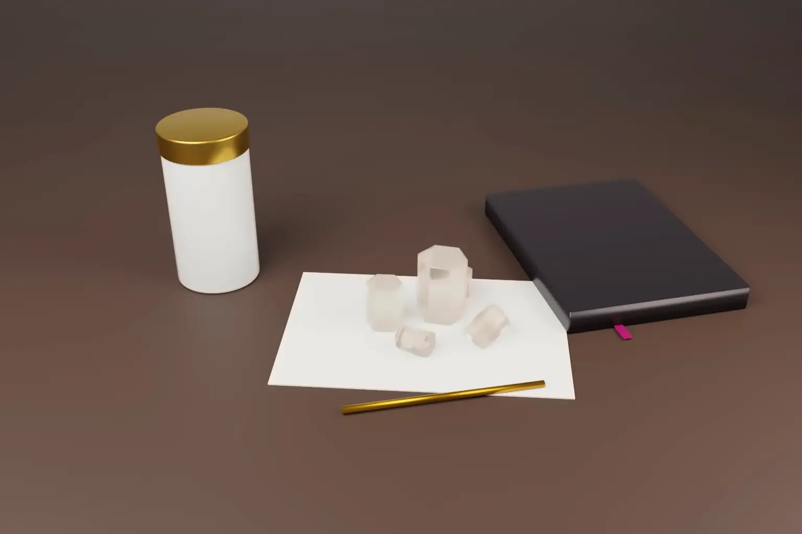

Can a drug patent fail in the UK because it never says the compounds were tested? Yes. On 17 November 2026 Meade LJ ruled on Boehringer Ingelheim's empagliflozin compound patent, EP (UK) 1 730 131. He held it always invalid for lack of plausibility.
The case is Dr Reddy's Laboratories (UK) Ltd v Boehringer Ingelheim International GmbH & Anor [2026] EWHC 2944 (Pat), Case No HP-2024-000037. Dr Reddy's Laboratories Ltd, an Indian company, was a defendant to Boehringer's counterclaim. Empagliflozin is sold as Jardiance for type 2 diabetes. The supplementary protection certificate based on EP 131 runs to 26 November 2029. The court held that it falls with the patent (para 292).
- EP 131 was always invalid for obviousness and/or insufficiency arising from lack of plausibility. SPC/GB14/070 is invalid as a result (para 292).
- The specification preferred 15 compounds, including empagliflozin, but never disclosed that any of them had been tested for SGLT activity (paras 194 to 197).
- The court called Boehringer's inference from the patent's structure "detective work" rather than disclosure (para 193).
- The crystal form patent EP (UK) 1 888 552 was valid while in force. Dr Reddy's proposed product would have infringed it (para 292).
- Patentees can draw some comfort. In vitro activity was enough in this field, and numerical results are not always required (paras 166 and 176).
The patents and the attack
EP 131 has a priority date of 16 March 2004 and expired on 10 March 2025. Its value lay in the SPC. Dr Reddy's sued for a declaration of invalidity to clear the way for a generic launch (paras 1 and 7). Boehringer counterclaimed on EP 552, which claims a specific crystalline form of empagliflozin. Michael Tappin KC, sitting as a Deputy High Court Judge, granted a preliminary injunction on 5 November 2025 (para 3).
A third Boehringer patent, EP 255, dropped out after an EPO Technical Board of Appeal revoked it on 29 June 2026 (para 8). Invalidity was Dr Reddy's only defence to infringement (para 7).
Lack of plausibility is not a separate ground of revocation in the UK. It is run through insufficiency or obviousness (para 11). The question for EP 131 was whether the specification made it plausible that the claimed compound inhibits SGLT (para 12). SGLT inhibition is linked to treating diabetes.
The test the court applied
Meade LJ took the law from his own recent decision in Accord v Novartis [2026] EWHC 2127 (Pat). That decision applies Warner-Lambert [2018] UKSC 56 and the Court of Appeal's apixaban and dapagliflozin rulings (para 166). The standard is "ab initio plausibility". The application, read with common general knowledge, must positively make it plausible that the invention achieves the claimed effect.
Lord Sumption's words in Warner-Lambert remain the touchstone. A bare assertion is not enough. There must be "reasonable scientific grounds" for expecting that the invention might well work. Those grounds must appear from the patent itself.
Why EP 131 failed
The specification moved from a broad general formula down to 15 particularly preferred compounds in paragraph [0054]. Boehringer argued that this cascade showed the 15 compounds were its best, and that such a claim could only follow testing.
The court rejected that argument. Meade LJ said the test is what the specification discloses (para 193). That is "a crucially different exercise" from working out what the patentee probably did. No passage disclosed that any SGLT test had been done (para 194). Paragraph [0103] read as "a very broad prophetic assertion" about the whole formula (para 195).
The judge gave five reasons for rejecting the cascade argument (para 197). The preference could rest on medicinal chemistry theory. It could reflect patenting issues or ease of synthesis. Making a compound does not mean it was tested. One detail stood out. The patent gave yields and spectrum data for the compounds but no individual IC50 values. Counsel could offer no good explanation if testing had been done (para 198).
A second argument, based on the compounds' glucose group and their similarity to known inhibitors, also failed. The court rejected both the cascade and glucose arguments (para 257).
What the court did not decide against patentees
Two findings help applicants. First, Dr Reddy's argued that a compound active in vitro might still fail in vivo. The court said there is no absolute rule, and rejected the point on these facts. SGLT inhibition was known to be specifically involved in diabetes, so in vitro activity could make the effect plausible (para 176).
Second, the law summarised at para 166 confirms that numerical data are not always needed. A plain statement that a test was run and gave a positive result is technical information. A bare assertion of activity is not.
The judgment is not final. Time to seek permission to appeal runs only after the hearing on the form of order (para 293). The court also declined to rule on claims of EP 552 other than claim 1 (paras 290 and 291).
Why the crystal form patent survived
On SGLT activity, EP 552 stood or fell with EP 131 (para 265). Dr Reddy's argued that a crystal of a compound with no plausible use has no industrial application. The court found that the PXRD and DSC data plausibly disclosed a single crystal form of low impurity (para 268). It also found real industrial application. A more stable crystal would at least make testing empagliflozin easier. Meade LJ described this as "a narrow contribution of modest magnitude, but it is real not fanciful" (para 282).
How the EPO, India and the US compare
| Jurisdiction | Legal hook | Practical effect |
|---|---|---|
| UK | Insufficiency or obviousness, applying Warner-Lambert | The specification must itself give reasons to expect the effect. Later evidence cannot fill a gap in disclosure. |
| EPO | Art 56 EPC (inventive step), G 2/21 | Post filed evidence cannot be disregarded solely because it was filed later. The effect must be derivable from the application as filed. |
| India | Sections 10(4) and 64(1)(h), plus section 3(d) | Sufficiency is judged on the complete specification. Polymorphs face a separate efficacy test. |
| US | 35 U.S.C. § 112(a) | No plausibility doctrine by that name. Written description and enablement do similar work. |
EPO. G 2/21 (23 March 2023) concerns technical effects relied on for inventive step. The effect counts if the skilled person, reading the application as filed, "would derive said effect as being encompassed by the technical teaching". The Court of Appeal has held that Warner-Lambert remains binding after G 2/21 (para 166). The two tests are framed differently.
India. Section 10(4)(a) of the Patents Act, 1970 requires a complete specification to "fully and particularly describe the invention". Section 64(1)(h) allows revocation where it does not do so sufficiently. Indian law has no doctrine called plausibility. A specification that merely asserts activity is still exposed to an insufficiency attack.
Section 3(d) adds a hurdle the UK lacks. Its Explanation treats polymorphs of a known substance as the same substance "unless they differ significantly in properties with regard to efficacy". In Novartis AG v Union of India (1 April 2013), the Supreme Court read efficacy for a medicine as therapeutic efficacy. EP 552 survived in the UK on a modest contribution from a more stable crystal form. Under Novartis, that contribution alone may not satisfy section 3(d) in India.
United States. US law asks whether the specification shows possession of and enables the claimed invention under 35 U.S.C. § 112(a). Amgen v Sanofi (2023) confirmed that a genus claim must be enabled across its full scope. For more, see our note on enablement of method of treatment claims.
Practical steps for pharmaceutical applicants
- Say what was tested. If the claimed compounds were assayed, state it in the application as filed. A qualitative statement of a positive result can be enough.
- Tie data to the claimed compound. Results about a class may not support a single compound claimed later.
- Do not rely on the cascade. A list of preferred compounds does not, by itself, disclose testing.
- For India, plan section 3(d) evidence early. Comparative efficacy data for a new form should be ready before examination.
- Generics should audit SPC basic patents. A gap in the original disclosure can defeat an SPC years after filing.
Foreign applicants filing in India can read our guide to India patent filing for foreign applicants.
Frequently asked questions
What is plausibility in UK patent law?
It is the standard used to test whether a specification supports a claimed technical effect. The application, read with common general knowledge, must give reasons to expect the effect. A bare assertion is not enough.
Why was the empagliflozin SPC held invalid?
The SPC was based on EP 131. The court held EP 131 was always invalid for lack of plausibility, so the SPC was invalid too (para 292).
Does India apply the plausibility test?
Not by that name. Indian law tests sufficiency under sections 10(4) and 64(1)(h) of the Patents Act, 1970. New forms of known drugs must also show enhanced efficacy under section 3(d).